welcome to the part of my website where i talk endlessly about stuff i like :3
choose a theme!
 album of the month
album of the month
discography reviews

馬 (2023)
betcover!!
genres: alternative rock, jazz rock
fav track: フラメンコ
 august 2026 listen on youtube
august 2026 listen on youtube
MAN I LOVE BETCOVER!!!! i can't remember how or where i found their music for some reason, but i've been really obsessed w them ever since i did. i've only heard three of their albums (勇気, 時間 and this one) and i think this is my favorite so far...
i looove how expressive the main singer is. his range is Crazy and he exploits it to the fullest in their songs. his versatility as a singer is perfect for a band that mixes so many styles and genres together. i especially love his whispery, smooth vocals in their slower, more ballad-y tracks (when he hits those super low notes it does something to my brain...) but his powerful vocals in the heavier, more fast paced tracks are beautiful as well. i think for me it feels like he sings with a lot of intention, as if he was carefully making sure to transmit exactly what he wants to transmit as he sings.
apparently he's also the one who composes and arranges the songs so it seems like i have to credit him for the gorgeous instrumentals as well... it actually makes a lot of sense when i think about it. i think his creative vision and the purpose of the music is very clear. its the kind of music that doesn't try to get you to relate to it or acommodate to your mood, but rather The Music is the one that tries to transport you to a place or a scene and tell you a story. i think thats what makes this album (and their music in general) so special to me. it sounds like a poorly lit bar on a wednesday night with the band playing on a tiny stage in the corner. or something along those lines is what i picture when i listen to it LOL.
very important detail: i just saw they had a website and i clicked the link thinking it would be your average half-empty, template-based band site... i was wrong LMAO please check it out it's the best thing i've ever seen https://betcover.web.fc2.com/ i love you, betcover!!
black star (2025)
amaarae

genres: dance pop, house
fav track: b2b
july 2026 listen on youtube
i've been sooo obsessed with this album! i feel like there's something so special about it that i can't really pinpoint but i will try my best to describe why i like it so much...
at first it took me a bit to fully appreciate it because the heavy autotune in the vocals threw me off a little LOL. but the more i listened the more sense it makes... i realized not only that it actually works really well with her singing style, but also that it's kinda the element that glues the whole album together. the album will go from brazilian funk bangers to the most delicate string and guitar sections, and i think the autotune present all the way through is what connects all of the styles together. it's a really creative and intentional use of autotune which i ended up really loving. some of the songs you'd hear at the club and some of the instrumentals are so Heavenly they give me goosebumps and it makes sense... the latter is the side of the album that really surprised me when it started showing after the first few tracks, and it made it clear that it wasn't just another pop/dance album.
this is such a fun album in the sense that it "overdoes" a lot i think. she did not need to have the most beautiful string section ever heard in pop music in a track where she talks about drugs and sex but she did and she went all out with it lol. genuinely even after listening to these songs a million times the instrumentals still blow my mind... i'll be vibing to an orchestral section then the coolest brazilian drums hit and i'm dancing lol i love how it does both so well at the same time. it was really hard to pick only one track between b2b, dream scenario and 100drum as my favorite because i really love them all so much!!
i listened to fountain baby as well since it seems to be her most popular album and even though i enjoyed it, it feels like she really perfected her sound with black star and made something incredibly iconic and never heard before... LISTEN TO THIS ALBUM NOWWWWW
cocktail (2003)
belanova
genres: house, synth pop
fav track: barco de papel
june 2026 listen on youtube
it's kind of awful that as a native spanish speaker i have literally never talked about an album in spanish in this site... it's not only that, but i have to admit that i literally never listen to music in spanish LOL. i think ever since i started actively listening to music when i was a teen i wanted to separate myself from the things i heard at home really badly. i wanted weird music that i had never heard before, to search for something that sounded more like me. idk usual teenager stuff :P so i made it almost a rule in my head that i'd always listen to music from people from other parts of the world instead, to the point that until today it's hard for me to convince myself to give music in spanish a chance, since i automatically assume that it won't resonate with me. so this album is special to me, since i found something that i love in my native language.
more objectively speaking... i really love the sound of this album. i think a lot of 2000s house albums can sound really cheesy nowadays (though that isnt necessarily a bad thing) but the way these guys incorporate the typical electronic synth and bass sounds of the era in this album is very tasteful, almost elegant... every element has just the correct amount of delay and reverb without overdoing it, carefully creating a space and a vibe that slowly develops throughout the whole album. it's really beautiful!! i think it's one of those albums that are truly appreciated when listened to in full from start to finish without skips. i love how it fluctuates between more ambient, downtempo tracks and funky guitars basslines so seamlessly.
really love the vocalist's voice as well, i think it works especially well with this kind of sound. i really love that they chose to not drown it in effects and keep it very natural instead, it creates a really interesting contrast with the instrumentals being super synthesized and electronic. yes it is another house album from the 2000s, but these sorts of creative choices really separate it from other ones from its genre for me. hermoso!
ollano (1996)
ollano
genres: downtempo, trip hop
fav track: un autre jour
may 2026 listen on youtube
i've been trying to listen to music in languages other than english and japanese and so i recently found ollano! been really obsessed with this self titled album. such an unique, mysterious, interesting album... shoutout france for the awesome music...
there are two different vocalists in it which usually tends to make the songs in an album feel a bit disconnected between each other for me, but it seems like the band members know their sound really well because that's not the case at all with this album. the feeling and atmosphere remain the same during the whole thing, even through vocalist, genre and even language changes. its beautifully cohesive in a way not many other albums are... i love the contrast between their darker jazzy experimental tracks like "la couleur" that make you feel like you're listening to a movie soundtrack and their lighter, pop ones like "latitudes" or "un autre jour", incredibly sweet and smooth. and the best part is that even though they're very different it all still sounds like its part of the same concept.
it can be a very slow album in tracks like "la couleur" but the wide range of sounds and instruments they incorporate keep it interesting the whole time. i absolutely love both vocalists' voices too, and how they fit the instrumentals perfectly.
searching for albums on discogs is really fun but it's also really sad how often i find albums like this where the artist dissappeared forever after releasing it LOL i'd really love to listen to something else by them T_T
U (2026)
underscores
genres: pop, electronic
fav track: wish u well
april 2026 listen on youtube
im talking about underscores again... how could i not when she has just released the album of the year or maybe the fucking DECADE IT'S SO GOOOOOODDDD also it's april its literally her month...
it's really amazing how she managed to get all of the songs to sound like the protagonists of the album. it shows that each song has been made with the exact same amount of love and effort and attention to detail n its beautiful, my favorite song changes all the time because they're all just so special and powerful... it's been a while since i heard an album like that! her creativity and originality when it comes to melodies and songwriting in general blows my mind and i think she pushed that even further with U. this is pop music but in underscores' hands it sounds like a whole new genre she just invented lol. so refreshing and fun!! i love how it's so interesting to sit down and listen to but at the same time it's also probably the most fun ive ever had dancing and singing to an album in my room. it's impressive technique/production wise but without ever focusing too much on it in order to not lose the energy and feeling of spontaneity. i dont know how she does it but god i love it so muchhhhhhh
the absolutely drastic change in tone in the lyrics from her last album is so crazy and i love it. its funny how they're supposed to be a lot lighter than her other albums and just something fun to listen to more than anything else, yet they are still better than a lot of artist's "deepest" works lol.
i am so glad that she isn't scared to try stuff out and that she seems more and more confident in herself and her craft with each release. its just so wonderful to see how she's turned into an absolutely iconic popstar, i'm so happy for her and all of the recognition she's getting!! random but i checked when it was that i first heard & added a song of hers to my playlist just bc i was curious and it was 21st april 2019... which is the same day as her bday :0
anyway! go stream the AOTY if you haven't! UNDERSCORES PLEASE COME TO SOUTH AMERICA I WILL SELL MY SOUL IN EXCHANGE FOR SEEING U LIVE
23 (2017)
HYUKOH
genres: k-rock, indie
fav track: simon
march 2026 listen on youtube
i've known about this album for years but it's funny because hyukoh have a bunch of releases named after their ages when they made them, and it was this year that i turned 23 that i feel like i really connected w it. it makes sense, but it still surprises me that they managed to capture these feelings well enough for me to resonate with them, even in a completely different context on the other side of the world. i don't think i really got this album when i first heard it back in 2021, but now the mix of nostalgia, excitement, anxiety and existentialism present in the lyrics hits so hard and it just makes so much sense to me like it never did before LOL. it's crazy!! it definitely became one of my favorite albums.
i've always loved how this album sounds ever since i found it though. i enjoy indie rock here and there (i am an electric guitar w reverb enjoyer its true) but it tends to get a bit predictable for me, so i love how dynamic this album is. each track is super unique and has a totally different vibe, switching from upbeat to crushingly depressing (positive) back and forth. i fucking LOVE the guitar solos on this album, they're so... emotional?? i guess? the melodies and chords are so wonderful, ESPECIALLY on my favorite track "simon". i don't even know how to explain what those guitars do to my brain there but the combination with the vocals on the chorus makes me want to cry, and it still did even when i had no idea what the lyrics said LOL. also this song is SO roy mustang its insane like thats literally him. sorry back to the album the vocals are beautiful too! the main singer's voice reminds me a bit of takao tajima from original love's. vocals that sound powerful and at the same time natural and effortless, a combination i absolutely lovvve to hear.
i listened to some other stuff from them but unfortunately i didn't love it as much as i love this album :( guess i'll wait until i turn 24 to listen to the EP they named after that age LOL maybe i'll get it then...
interactSTYLE (2026)
DV-I
genres: electronic, atmospheric,
breaks
fav track: 010 interactFormant
february 2026 listen on youtube
no matter how much time passes since i've listened to dv-i's music for the first time, i'll always name her as one of my favorite artists as well as my main inspiration when making music, along with etro anime. she's THE one artist whose releases i will go and listen to immediatly the second they come out. i first found her music around 2020, not through a song but through her second sky set, which was an especially magical way of doing so. i was absolutely mindblown... and i still am, each time i listen to something new from her. i have no fucking clue HOW she makes this music and i dont think i ever will, but the fact that she's shown me that it can be made at all was inspirational enough for me to go and try to make music myself. this might be silly but i remember also being happy because the person that was making the sort of music i dreamed of making was a girl just like me... it's just the sorta stuff that means so much to a 17 year old who loved a genre and a community that never seemed to have a space for her. maybe seeing dv-i make the most awesome music i've ever heard was one of the little things that gave me the push i needed to start making and releasing music. she showed me that it was possible to do it. unrelated but i think around 2022 i sent her a dm asking her to listen to my song and i explode from embarrassment every time i think about it LMAO im sorry i was young and annoying...
okay so about this release!! this is probably the closest thing to an album she's released so i was very excited about it and ive been listening to it a lot... it's actually a compilation of tracks made for a nintendo 3ds theme, which is why the tracks are a bit different, more ambient-like than her other releases. but i still enjoyed it!! her shiny melodies are always beautiful and have that special emotional touch, the tons and tons of layers and intrincate little sounds are always a pleasure to take the time to carefully listen to, and she always nails the voices and sound effects scattered throughout the tracks. i also absolutely love her break chopping and drums, maybe they're less present in this release than others, but she still did some insane work in that last track. i'm happy she's trying out new things and i'll always be here to listen. don't know if this is the release i'd recommend to someone who has never listened to her music since it's pretty different from her usual sound but it's still really nice and i'm always excited to see where she'll go next.
groove theory (1995)
groove theory
genres: R&B, downtempo, trip hop
fav track: 10 minute high
january 2026 listen on youtube
happy new year!! i found this album on someone's last fm page so thank you person who i stole their music taste from!!
ever since i found "see the sound" by etro anime, i've been trying to find other trip-hop/downtempo albums that i love and it's been a much more harder task than i thought lol... i do really love the genre but a lot of music i've heard from it seems to not take many risks, or in the case it does, it tends to go down a more experimental/minimal road that isn't personally what i'm looking for. basically i always find trip hop related albums that i like, but none that i Love, so i was really glad i found groove theory bc its exactly my cup of tea!!
this album is very groovy (i remembered the name of the group after typing this. well its true) the vocalist's voice is really nice and dynamic, her range and the way she interprets the songs is so fun and refreshing. the other half of the group, the producer, does some really great work too. in a lot of more vocal trip hop songs it sounds like the producers try to put all of the focus on the voice and treat the instrumental more like a backing track, but in this album both parts complement each other really well and are equally interesting, which i really really appreciate. so cool!! i looked around discogs for a bit to see if the producer was making music for himself or some other groups nowadays but it seems like its not really the case u_u holy shit he produced a beyonce song though LOL
as much as i like it though, i can't help but thinking that this album could've easily had like 4 less songs than it does and it wouldn't make much of a difference lol. when i first heard this and the first track started, i liked it SO much that for a moment i thought i had found a new favorite album. it might be close, there are a lot of tracks in here that i love, but as i kept listening i think it ended up lacking a little bit of cohesion and direction. i know albums and CDs worked differently in the 90s and sometimes artists would just fill them up with whatever in order to release something but 14 tracks?? they didnt need to do all that LOL. or maybe they did. i respect it... it's still a really cool album and i'll be playing it a ton of times over the summer probably :P
wallsocket (2023)
underscores
genres: electronic, indie rock, pop
fav
track: old money bitch
december 2025 listen on youtube
i remember first listening to underscores in 2018. i was 16 years old and she released a song on an edm label that was kinda popular at the time so i gave her single "about the kid that never left the house" a try. i liked her music, but i NEVER thought that artist would turn into the absolutely iconic artist underscores is today. her music has always been great but i'm glad that now she has the confidence to go all out with it. she is so insanely talented as a producer, a writer and composer. she's one of those artists that make songs that i cannot picture the making of at all... i think sometimes as a producer it's easy to get caught in more technical aspects of music, like trying to understand how it was built, or identifying the elements that compose it. but when music sounds so dynamic like this, like it was written all in one go, in one big burst of creativity, i can only hear it as it is. maybe her technique and sound is just completely impossible to understand and separate in parts LOL.
wallsocket is one of those albums that no matter how obsessed i am with it, i really cannot listen to it on repeat because it feels like it deserves my full attention when i do. the lyrics hit SO damn hard (johnny johnny johnny still physically hurts me everytime i read the lyrics orz) and the whole thing just packs so much emotion that it HAS to be the protagonist whenever its playing.
i kinda love how even though she is completely out of that scene now, her sound is still influenced by 2010s EDM, probably due to her origins as a producer. that one synth melody in "old money bitch" is so fucking good and it instantly brought me so many memories of being a cringey teen listening to nerdy electronic music in my headphones all the time on my way to school LOL... most of the times i pretend that whole phase never happened but i wouldn't really be me if it wasn't for it, and i think that's why i kinda "relate" to this album and feel a connection to it. it's weirdly and personally nostalgic for me in a way not many other music is. also OMB is my favorite but "uncanny long arms" gets a special mention because i love that melody and those emo ass guitars so damn much.
this is the last album of the month of 2025!! see you next year...
beef (2023)
evaboy
genres: hardcore breaks, juke, electronic
fav track: nothing here left
november 2025 listen on youtube
after a while of not listening to much electronic stuff (been listening to a lot of pre-90s music for the first time in my life lol) i revisited this album in november and it reminded me of how much i love electronic music. and of how much i love miya lowe's work as well! miya has a bunch of aliases and she has amazing releases under every one of them, but evaboy is the one i found first so it'll always have a special place in my heart... they have recently announced that they are retiring from music at least temporarily, which made me want to write about what her music means to me even more.
i resonate with miya's music a lot. this might be absolutely personal and not her intention at all but i think her music speaks to people who love rave music but that aren't really able to fully fit in with their local rave community, that aren't able to go to that many raves for whatever reason, or that often want to hear a bit more weirdness in rave music but can never really find it anywhere. to me she's like the bridge between two opposite sides of the underground electronic music spectrum, right in the middle between dance-irl-event focused music communities and the more edgy and experimental internet-only spaces. it just feels so right as someone who has been trying to get out of their shell more after listening to electronic music on headphones only for years lol. their big range of inspirations, added to of course her insane creativity and skill, result in an amazing, explosive and extremely unique mix of styles, genres and samples that i love. her music is so distinct and personal.
she's been such an inspiration to me... i think my music wouldn't be the same if i hadn't listened to this album and her prior one at all. i started having so much more fun when making music thanks to them, experimenting with samples and genres a lot more. i personally like this album even more than their first, it's truly a masterpiece... i don't think i can count the genres in this album with two hands yet it all sounds so cohesive and you can immeditaly recognize it's her work. from hip hop to reggaeton she nails all of it and adds her own amazing personal touch.
i don't know if they will ever release music again but i really wish her the best. i only hope she knows how BIG of an impact she made on the underground electronic music community, and that she knows how much her music is a place of comfort for so many people who don't really know where they belong. i hope she knows that she filled a really big void that no one else is gonna be able to fill like she did. miya lowe is really one of a kind.
spreading silence (2010)
etro anime
genres: trip hop, downtempo, dnb
fav
track: day by day
october 2025 listen on youtube
let's pretend it's still october... ALSO HAPPY BIRTHDAY TO THIS SECTION OF THE PAGE YAY lol cant believe ive been doing this for a year
since i've listened to this album a lot this month i want to talk about etro anime for a bit, they're such a special band to me... as a lot of other people i first heard their music thanks to one of my favorite videogames, digital devil saga. i'm very glad that for some reason i downloaded a USA rom instead of a europe one, because this version of the game changed the original opening song for danger by this band, etro anime. i cannot explain how this song made me feel when i first heard it in 2021... maybe it was a combination of me really loving the game's atmosphere and story as well, but either way i was so so amazed by it. i checked out the rest of their first album, see the sound (not this one) and i can say that it was one of the main reasons why i started making music. literally life changing album lol. i didn't know music like that existed. i thought Wow, this is the kind of music that i want to make... years later i still haven't been able to find a band or artist that compares, that manages to achieve this wonderful blend of dnb, trip hop and downtempo.
9 years after they released their first album and prior to dissappearing, etro anime released this album, spreading silence. there isn't much info out there about this band in general, so i'm not sure how many lineup changes happened between this and the 1st one, but i do know that they had a new vocalist on some songs, so the vibe is a little different. it was a bit hard for me to appreciate it at first with how high my standards were LOL but after a few listens i realized that i like it a lot too. day by day, i think of you and another life are probably my favorites.
however, as much as i love see the sound, i kinda wish they tried to evolve a little bit from that sound and made something a little different with this album. it feels more like an epilogue, or like an attempt to try to recreate their original sound with different components than a thing of its own. maybe it's because the new vocalist sounds almost exactly the same as liset alea (the original vocalist) and maybe it wasn't really the point to create something groundbreaking with this album, since it wasn't even physically released, but it still leaves me thinking about the possibilities and things this band could've explored in its career. i hope they come back one day...
soul liberation (1991)
original love
genres: pop, funk/soul, rock
fav
track: love circuit
september 2025 listen on youtube
Help i thought this obsession with an 80s/90s japanese rock pop band was gonna last for like a week but it's been months and it's still going
i've been talking about this guy for ages in here but whatever it is MY page... i've been really obsessed w a band called pizzicato five (check out the shrine i made for them!!!) so i decided to listen to more music from their vocalist who left the band to work on his solo project, original love. i didn't have super high hopes i'd love it because it seemed a lot more like "radio music" but i do really like takao tajima's voice so i gave this album a try. and oh my god i love it so MUCHHH.
i thought this project was mostly just catchy pop songs and well he proved me wrong with this album... there are rock, jazz, funk and soul influenced songs in here and he adapts to each genre perfectly. track 5 with those distorted electric guitars and voice effects??? track 3 with that Awesome jazz bassline?? hell yeah!! takao tajima had just left pizzicato five at this time, and i think it shows how much his years in the band influenced his own sound. this album has that playfulness and "unexpectedness" from the old pizzicato five that i enjoy so much lol. i love how even though he's trying out things he's never done before, his voice sounds as confident and powerful as ever. i think i really enjoy tajima's music because of that... whatever genre he's making, whatever project he's working on, he is always giving it his ALL. you can hear it in his voice how much he loves what he does. he flows so well with the music. in live performances as well! he's got such a popstar attitude on stage lol
i watched some videos of recent performances (like, post 2020) and it's crazy to me how he still has the exact same vocal range he had when he was like 20 or 30 years old Wow... his voice sounds different of course but he's still out there at 59 years old singing powerful high notes as if it was nothing hell yeah dude. it also feels kind of unreal to watch videos of his live shows, because when i first heard his voice in an album from 1988, he was a faceless and nameless singer in an old, forgotten record. that's all i knew about him for a while, it was all a journey finding out more about his career, discography, and artistic development. and so now you're telling me it's technically possible to see him live one day?? uhh PLEASE tajima takao don't retire before i can go to japan to see one of your live shows... give me like 5 years or something i'll get there somehow LOL i love his music so much!!
rough and ready (1997)
ram jam world
genres: dnb, jungle, downtempo
fav
track: searchin'
august 2025 listen on youtube
for a while now i've been looking for a new way to find music, especially albums, that doesn't rely on algorithms doing the work for me. it's not like it's bad to do that, but i kept feeling like there was a lot of music i would never reach by doing this, plus it was a little boring... so i started using discogs, a website where you can find the full discography of almost every artist imaginable, but also buy physical releases, search music by genre and year, and etcetera... i cannot explain how much fun i've been having looking for music like this LOL. i searched for jungle albums, sorted by alphabetical order, and started listening to whatever showed up. well, only what existed somewhere online... a lot of japanese and russian artists showed up on the first page (because foreign alphabets go first), and that's how i found ram jam world!!
this album is sick! i don't know much about this artist, there isn't a lot of info online... i can't even seem to figure out if it's one guy or a band?? or a duet?? but anyway... i thought it was really cool how they kept the genre's roots in mind when making this album, incorporating reggae sounds and vocals in english. it feels like those sorts of things would be lost after travelling to the other side of the 1990s world, but it's not the case at all with this. this guy/band/person knows their stuff... had me thinking i wish i knew a bit more about the junglist movement in japan. the way they respect and embrace all of the genre's history, culture and predecessors is really amazing.
this album has a bit of everything and i always love a diverse album... there are heavier tracks with some CRAZY break chopping, atmospheric drum and bass, dub, hip hop, ballad-y vocals, and guitar solos... u should listen to it
on her majesty's request (1989)
pizzicato five
genres: soft rock, j-pop, lounge
fav
track: homesick blues
july 2025 listen on youtube
october 2025 update: i ended up making a shrine for this band check it out!
i've never really been interested in music released prior to the 90s (except for a short city pop phase i had a few years ago...) so the fact that i've listened to this album every day for the past month says a LOT... some people would kill me for this but i didn't know 80s music could be this awesome Lol... i found this album after listening to "bellissima" (which is april 2025's album of the month, and which i love w all my heart) and doing some more research on this band. Maybe i love this one even more than that...
i am absolutely obsessed with this album. i feel like it gets more beautiful each time i listen to it. it's a very conceptual album, i almost thought this was the soundtrack for something when i first found it. the instrumentals and the composition are so interesting and creative, and i love how a lot of the tracks sound like they're telling a story. each section, sample, melody and instrument adds something to the narrative. the production is so innovative for the time it was released in, i think. vocal chops, electronic elements, samples... it's insane that "satellite hour" is a song from 1989!! and of course, as with bellissima, MAN i love takao tajima's vocals so much... it's not only that his voice is super smooth and pleasing to hear, but i also love his interpretation of the songs. even if i have no clue what he's saying, he transmits so much! it really feels like he's not only singing but also playing a character, which only adds to the cinematic feel of the album.
i wanted to hear more from tajima, but he left pizzicato five two years after joining sadly
 (also the
band changed its style a ton after that) so i checked out his later projects with his
band and i did Not believe it was the same person at first LOL. he changed his singing style
drastically from one project to the other, in my opinion his voice sounded a lot more natural
and soft in his pizzicato era. i still really liked the album "eyes" from original love
though! maybe'll listen to more of his discography and end up writing about him again
LOL. (oct 2025 update: i did) i also found out he's still doing shows which
made me happy to hear!
(also the
band changed its style a ton after that) so i checked out his later projects with his
band and i did Not believe it was the same person at first LOL. he changed his singing style
drastically from one project to the other, in my opinion his voice sounded a lot more natural
and soft in his pizzicato era. i still really liked the album "eyes" from original love
though! maybe'll listen to more of his discography and end up writing about him again
LOL. (oct 2025 update: i did) i also found out he's still doing shows which
made me happy to hear!
feels a bit weird to write about this album because it must be only me and a bunch of middle
aged japanese ladies who know this record and and listen to it LOL  but if you enjoy 80's music please
please give it a chance!! it's so amazing i swear... i was
even a lil embarrassed to show this to my boyfriend whom i show all of the shit i listen
to but i am very glad i found it... i love you 80s pizzicato five...
but if you enjoy 80's music please
please give it a chance!! it's so amazing i swear... i was
even a lil embarrassed to show this to my boyfriend whom i show all of the shit i listen
to but i am very glad i found it... i love you 80s pizzicato five...
fancy that (2025)
pinkpantheress

genres: pop, dance
fav track: nice to
know you
jun 2025 listen on youtube
it was HARD to pick only one album this month bc i found a lot of awesome ones that i really really love... i ended up picking fancy that because i cant believe i've never talked about pinkpantheress on this site even though my music is super influenced by hers, and i've been listening to her all the time for ages lol!!
i've said this a lot, but personally one of the things (if not the thing) that i love the most in music is unpredictability. i absolutely love when i cant really predict where a melody will go and when it keeps surprising me over and over as it plays for the first time. and that is one thing that pinkpantheress always NAILS. her composition is so refreshing to hear to a point where it's hard to find a structure in her songs sometimes, yet they still manage to be super catchy and danceable somehow. it just makes a lot of sense how she can be the popstar she is and at the same time remain "alternative".
as for "fancy that" itself, i like it! it was really interesting to see her try new things in this mixtape, especially in terms of lyrics and overall tone. its a BIG change from her earlier releases and i do love seeing her have more fun with music. i also like that she was more involved in the production side of it. i think that the more producing she does, the more unique and personal it sounds. my favorite release from hers is still probably "heaven knows" though... not really because of the cleaner production or whatever (if you've read my other reviews you know i dont gaf about that) but i guess i just enjoyed the general vibe of that album more? i've noticed my favorite songs from this mixtape are the more sad sounding ones as well LOL i dont really know why...
the visuals for this era are so amazing too!! the video for "tonight" is so iconic i love it lol and i loved watching some of her performances at glastonbury and seeing her get more confident w the stage and such. i don't think i'll be able to see her live in the near future but i can only think about how awesome a pinkpantheress concert would be in south america omg she wouldn't be able to believe our crowds LOL i hope she does make a world tour at some point...
jungle hits, vol. 1 (1994)
various artists
genres: jungle, ragga jungle
fav
track: have no fear
may 2025 listen on youtube
i had been taking a bit of a break from listening to dnb and jungle recently because i was struggling to find new releases that were like... "refreshing" to hear? so i went for something more oldschool and, since i'm trying to listen to full albums more, i decided to give the jungle album a try. i ofc had heard a lot of tracks from it separately before, but listening to it in full is a whole different experience. listening to this reminded me that no matter how much modern jungle i listen to, i'll always be missing a piece if i'm not listening to enough oldschool ragga jungle. and this album basically holds the essence of the genre. i really love how these producers show very clearly the genre's reggae, soul and hiphop roots, but they also weren't afraid of innovating, creating sounds and drum patterns no one had heard before. i think jungle is not only born from the clash of many different genres and backgrounds but also the insanely creative minds of a community that wanted something else out of electronic music, something different and unique that represented them. maybe that's why it feels so full of life compared to newer releases, it sounds more like community and raves, instead of lonely bedroom studios.
i can't help but feel like i am still missing an essential part of the charm of this album by not hearing it on a dancefloor though lol. if everything goes well and i get to play my first dj set in a proper event in a few months, i'll be sure to make it happen myself!! i got chills only thinking about being able to blast maximum style through the speaker LOL!!!!
this is so random but i also noticed while listening to champion that a selena gomez song i listened to as a kid "samples" (more like copies the melody and lyrics of...?) one of the tracks in here LOL. what the fuck. the artists are not credited anywhere, so maybe it's more like straight up stealing... still really interesting though, i wonder how they even found this track to begin with, or who brought it up?
i love so many tracks from this album that i wanted to mention some other favorites as well as the one i picked in the left section: surrender is so fucking GOOD and timeless. as it progresses, every time u think it cannot get better a new section of the track appears and blows ur mind. awesome!! i absolutely love the sampling in "maximum style", "ribbon in the sky" and "champion" as well. I LOVE SAMPLINGGGG
bellissima! (1988)
pizzicato five
genres: soft rock, j-pop, soul
fav
track: sunday impressions
april 2025 listen on youtube
october 2025 update: i ended up making a shrine for this band check it out!
what a wonderful wonderful album... i was Obsessed with two of the songs from this album years ago ("planets" and "this can't be love") but i think i tried listening to the full album once and didn't like it that much. i have no clue why, because i listened to it again in full a few weeks ago and wow... this might be one of my favorite albums...
there's something about the singer's voice that i absolutely love. it's so pleasing to listen to. im kinda picky about voices in songs sometimes, especially when they're high pitched (i almost gave up on trying to get used to ayumi hamasaki's voice but i loved the instrumentals too much lol) but the vocals in this album sound so... natural? i don't know how to explain it, the singer just flows with the music in such a perfect way. might be one of my favorite voices ive heard... i also found out recently that this isn't really pizzicato five's main singer, but rather someone from another band that they invited for this era (takao tajima from a band called original love) so i might have to check that out :P
i also cannot believe how clean this sounds for being an album from 1988?? WHAT!! i'm guessing the version on spotify might be a remastered version or something, but still... it sounds so full and beautifully mixed. there is a TON of instruments being played in this album, and yet i can hear each one clearly. my music cant relate
in their bio they are described as "godfathers of the shibuya-kei scene" and i can totally understand why. this is probably not the album that makes that obvious, but i wanna point out that this record was released around the same time most city pop hits were released, and yet it sounds so much modern and experimental than the songs from that era that i've listened to. the way they incorporate jazz, soul, and some electronic elements into the typical city pop formula is so amazing and so ahead of their time. love this album so much. i was listening to this on my walk home from college the other day, and when that beautiful instrumental part in "sunday impressions" played i felt like i was floating LOL im glad there were not many people in the street bc i probably had a silly smile on my face. i have to listen to more pizzicato five
hyperdrama (2024)
justice
genres: french house, electronic
fav
track: neverender
march 2025 listen on youtube
lets ignore that i skipped a month... i was busy doing the phoenix shrine okay
I FUCKING LOVE JUSTICE!!! this album isnt new or anything but i'm listening to it a
ton because i saw them live a few days ago... it was so so beautiful that i'm not even going
through post-concert depression right now, i'm just infinitely grateful and glad to have
experienced a show like that! it is really hard to bring big shows like these all the
way to south america and i didn't think i would actually be able to see it live, so yeah i'm
just so happy  i wrote a whole blog entry about it here if you wanna read it, but it's in spanish and it wasn't
written with the most proper grammar so translators might struggle w it :P
i wrote a whole blog entry about it here if you wanna read it, but it's in spanish and it wasn't
written with the most proper grammar so translators might struggle w it :P
anyways!! i really like hyperdrama! it was so surreal listening to some new justice when it came out because i found their music when i was like 15/16 years old, around a year after they released the album prior to hyperdrama, so they haven't released any music in the time period that i've been a fan of them lol (except for some live albums but u know what i mean) until this album released!! this was my first time experiencing a new release after 7 years of listening to them!! what the fuck!! and it did NOT disappoint!
i feel like it's a wonderful mix of the parts i like the most from cross (1st album) and the
parts i like the most from woman (3rd album). audio video disco (2nd album) remains my
favorite of them because i love that album with all my heart but hyperdrama is a close
second... i know its very fake fan of me to pick neverender as my fav track lol but i really
love it  im not a tame impala fan but his vocals work sooo well with
justice's style...
im not a tame impala fan but his vocals work sooo well with
justice's style...
i think one of the things i love the most about justice's production is how much they love sampling.. the other day i found out that for "generator" they used a plugin called "rave generator" which basically contains a ton of sampled synths from the 90s and 00s. i have it, and i couldn't believe how they made such a beautiful track in a grammy-nominated album with a freeware plugin with a bunch of crunchy aliased samples. i really love how they prioritize creativity and experimenting with sounds and samples over cleanliness in their tracks. i don't listen to a lot of other "mainstream" electronic music but i really dont think that any other current producers are doing it like they do. people call them daft punk's successors, but to me they are much more than just that!! i feel so lucky to be able to listen to new justice music, not to mention to SEE THEM LIVE!! truly legendary producers... i hope i can experience a new justice album again someday :3
tall tales EP (2024)
dwarde
genres: breakbeat hardcore, jungle
fav
track: mix it
january 2025 listen on youtube
who said EPs cant be included in "album of the month" huh...
it is MY website and I make up the rules
so i've been practicing DJing for a while now with my controller and it's been really fun just
doing small sets in my room. but around a week ago some cool people invited me to practice
using a CDJ for the first time... and well it was scary LOL especially at the beggining since
it took me a while to re-organize my controller brain but also omg i had so much fun... they
of course had a much more powerful sound than my bedroom and playing my favorite tracks in
those big ass speakers in front of some other ppl was the best feeling ever!!
the track that made me feel the best when i played it was by far "mix it" by dwarde & gand. i
cannot express how much i love this track and how much it makes me want to dance :P the vocal
samples, the piano, the DRUMS and the bass, and the way it's beautifully mixed and mastered so
it all hits even harder. ITS SO DAMN GOOD!!
this EP made me realize how much i love breakbeat/oldschool hardcore. i love jungle too dont
get me wrong but sometimes i want to hear something with a bit more of a constant rythm and
heavy kicks while still having the breaks and chopped drums, and this ep is exactly what i
want to hear more of. i really hope i can find similar releases to this one...
i found about this EP thanks to "a break from reality" (a super sick jungle/dnb/hardcore radio
show that u can check out here) they played the track "aqua" and i
absolutely loved it and it led me to find this so shoutout to them!
SMILE! :D (2024)
porter robinson
genres: indie dance, pop
fav track: mona lisa
december 2024 listen on youtube
ive always liked some porter songs ever since i was a teenager listening to edm n stuff, but for some reason i never really connected that much with worlds and nurture. i loved virtual self SO MUCH btw (i'll probably write about it at some point it changed my life) but when it comes to his main alias i think my life events + music taste never aligned with the releases if that makes sense lol so a few months ago i gave smile a listen just thinking it could have some songs i liked as with the other albums... and i ended up loving the whole thing so much aaaaaaaaaaaa
i think that what made me appreciate this album in the first listen is how sincere the lyrics sound and feel... probably because it's not something i usually expect from electronic music? it's not like we don't have ppl that talk about feelings at all but i feel like a lot of ppl end up picking one feeling to talk about in order to fit a certain image or brand they want for themselves, or they write about things on a very surface level in order to keep their relatability and etc...
but smile is personal and silly and awkward and cliche and real as fuck and thats why i love it!! i love that it's an album about being human and struggling with stuff and deciding to either cry or laugh about it. i love how it loves cliches and it's not afraid of saying stuff your parents or someone older than you might have told you at some point. i love how it's not mysterious or vague and how it doesn't try to be something that it's not. kitsune maison freestyle is probably the silliest song on the album but it's one of my favorites, because i think that these days we really need to be reminded of the most obvious things we constantly forget, like "hey everyone is struggling, even the people who look really cool on instagram" LOL do u know what i mean...
it's been a while since i've been so obsessed with an album honestly lol it might be partly because with this one there's the Extremely rare occasion where there is a chance of the artist who made it coming to where i live to perform it... literally nothing confirmed yet he might not even actually come but the possibility of it happening makes me so excited LOL i dreamed about going to the smile tour 4 times already im losing my mind!!!! GRAHHH porter robinson please announce the fuckin south america dates and argentina better be there...
seeyalater stratocaster (2022)
ippo.tsk
genres: vocaloid, indie rock
fav
track: john frustrante
november 2024 listen on youtube
i'm getting into vocaloid in my twenties i might be cringe but i'm free...
i really really like this album. i found one of the songs years ago and liked it a lot but
only a few days ago decided to check out the rest for some reason?? and im very glad i did!!
i really needed something like this i think... maybe its bc these last months i've been
listening to a lot of instrumental only electronic music, but the lyrics and guitars in this
album hit hard for me lol sometimes u need to put the breaks down n be emo for a bit u know...
of course theres also the fact that its vocaloid and i'm starting to listen to a Lot of
vocaloid... i don't know why now out of all times in my life but rn im listening to kikuo and
inabakumori on repeat all day... I WAS MISSING OUT!!
so yeah send me your vocaloid recs if theres any vocaloid enjoyers reading this :3 im kinda
late to the party but im addicted n i need more
lost paradise (1991-1994)
various artists
genres: jungle, atmospheric dnb
fav
track: escape - the optical mix
october 2024 listen on youtube
i love jungle and hardcore! i found this album/EP on spotify randomly one day and i've been
listening to it a lottt. i wish old DJs didn't have such vague artist names not only because
there are tons of artists named "escape" but also bc this is probably just one of 8 alias they
used lol... apparently this ep was
this alias' only release? totally different vibe from the track on this album's vibe but still
cool!
speaking of old jungle music today i searched "jungle hardcore mix" on youtube and sorted by
last updated just 2 see what would show up and i 100% recommend doing the same lol... you'll
get some of the usual "y2k videogame music mix" with the same 3 sewerslvt songs on them but a
lot of other results are british dudes with their weekly or sometimes even daily jungle 90s
mixes, who seem to somehow never run out of obscure-exclusive-limited edition vinyls to play..
shoutout to them
here is a list of manga i finished/caught up with! i marked
my favorites with a  but if i finished it it means i
liked it lol. currently reading: a witch's life in mongol
but if i finished it it means i
liked it lol. currently reading: a witch's life in mongol
the guy she was interested in wasn't a guy at all
you and i are polar opposites
im back on my romance manga bullshit.. this was really cute!! i feel like there were way too many characters for how little chapters there are though. i really liked most of them but i'd rather have less characters in exchange for a bit more backstory or development for each of them. it got a bit repetitive after a while as well bc when a new character is introduced every 10 chapters or so it feels like the story isnt really moving forward i think... the arcs that did have time to happen were really nice though. i especially loved nishi's (whose arc felt like a personal attack LMAO too relatable...) and azuma's, since both approached interesting topics that i dont see discussed very often in manga. the main couple is super cute and i really loved them from the start, plus i'm always fond of romance mangas where it doesnt take them one billion chapters to get together so it gets my approval :P the artstyle could be a little more polished but its still a very enjoyable read.
gachiakuta
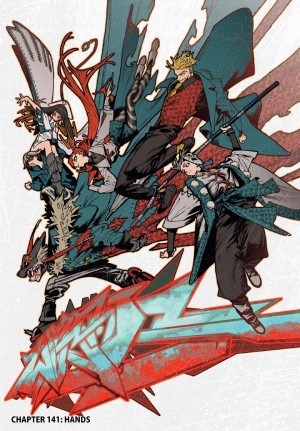
i didn't think i would find another manga that i'd love so much so soon LOL. i love everything about it! the lore is super interesting and it has expanded way further than i thought it would, the characters are super funny and loveable, the art is incredible... i am especially fond of the outfits.. not only because they are cool as hell but i really love how this manga depicts DIY fashion so beautifully. it's so special because i feel like whenever you see poor/lower class people in most manga the only thing you'll see them wear is some old rags. it's not like that cannot be accurate in some cases, but also most fashion trends and subcultures originate from poor people DIYing their clothes, sewing together whatever they have laying around and creating something new and unique, and i love that this mangaka seems to really understand and respect that. clothes are a BIG part of the worldbuilding in this manga and that's so cool to me! a character's clothes tell you so much about them and the way they live, in a way i havent seen in any other manga ever.
the fact that they got a graffiti artist is also amazing and it helps to make the world feel a lot more realistic... it really feels like there was a lot of attention and intention put into every part of this manga. it's not only commited to telling an incredible story but it's also commited to depict the things that inspired it in a very mindful way, remarking the importance of its origins.
i also love how it can be so bizarre sometimes yet it's always in a way that doesn't make the characters any less human or relatable. the team truly feels like a team and sometimes even a family which is something i always love to see in shonen manga. sure we got the chosen one or something but the mangaka still manages to keep things balanced and remind you that no one would be able to do shit on their own. AWESOME manga go read it NOW
fullmetal alchemist
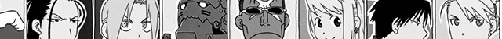
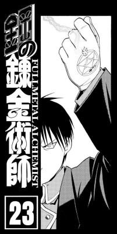
i almost didn't write a review for this because it's just a fact that this is one of the best manga of all fucking time you dont need to read me saying that LOL. but i love it so much that i wanted to write something anyway.
i hadn't been reading any shonen manga for a while because i was pretty dissappointed by the ones i read or watched. i thought maybe it just wasn't for me, until i watched fullmetal alchemist brotherhood and i realized that i just hadn't read any good shonen manga LOL.
fma just has it all... good pacing, interesting and consistent story, and characters with interesting personalities and developments. the way different plotlines are handled and told, carefully revealing information as they go, keeps the story interesting the whole time and it gives each character a moment to shine. everything is so perfectly balanced (almost like... an equivalent exchange...) and it's just mindblowing. it's especially noticeable in the ending arc, where all the different storylines reach their end and join together in one very smoothly. that must be SUCH a hard thing to achieve and she did it perfectly lol
i really love how this author doesn't let her work be restricted by whatever the "shonen" category is supposed to mean and isn't afraid to explore all sorts of themes and characters. i don't think i've read any other manga tries to focus both on plot and character development equally as FMA does and it succeeds beautifully in connecting them both. the story in itself is great but the thing that makes it hit harder and closer to home is how human the characters feel. it was especially wonderful to see so many awesome female characters in this manga. not only they are "strong" but there's so many more sides to them than just that and i love it.
it was also very refreshing to see how the manga handles relationships and demostrations of affection (both romantic and platonic ones) in a genre where they seem to be sort of a taboo that no one dares to explore beyond surface level lol. i think community being one of the main themes of the anime is what makes it so special. so many shonen manga decide to rely on one powerful guy who will save everyone (which is much easier lol) but fma constantly reminds you that you can't achieve anything on your own and that there is power in strong relationships between people.
awesome manga!! also im in love with roy mustang in case it wasnt obvious by his face being in every corner of this damn site
yotsuba&!
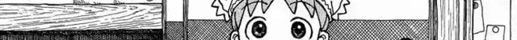
ao haru ride
this manga is like a mix between lovely complex and kimi ni todoke? sorta? to me its similar to lovecom in terms of interesting main characters with strong personalities, combined with kimi ni todoke's worst parts, which is unnecessarily long drama based on misunderstandings and "bad timing". i will give it a lot of extra points for something neither of those two manga had though, and that's that i feel like the drama parts that were not related to romance were pretty well executed and went deeper than i thought they would for a shoujo manga like this one. but still... bit of a spoiler here (more like a warning in case anyone wants to read this manga and suffer like i did LOL) but the fact that for like 30 chapters it's only misunderstanding after misunderstanding stopping any relationships or developments from happening is so damn annoyinggg lol. and when the main characters do finally communicate properly it's like 2 chapters and then the manga is over. it's a shame because i really thought it would become one of my favorites at first! i dont like that a lot of mangakas seem to think that a couple is only interesting when it doesnt exist yet lol. but anyway, personal romance manga preferences aside, it think it's a good manga all things considered and i really appreciate the good aspects of it. i always enjoy imperfect and unusual characters and relationships so i'm glad i found and read this even if it annoyed me Lol.
witch hat atelier
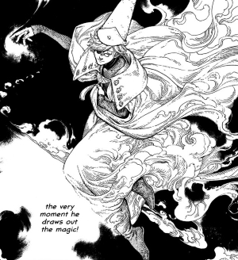
PEAK HAT ATELIER!!!! im not up to date yet but god this manga is so good in literally every way i dont even know where to begin. the most obvious aspect is probably the art. i know something such as "good art" is very subjective, but i think this mangaka is insanely good at making art that fits its world and characters. it looks like what i pictured fairytales to look like when i was a kid. it's taking me a while to read this manga because i love looking at all the details, clothes and expressions in every panel...
i love the characters themselves too! i think it's been a while since i read a manga that really had me rooting for them. their respective arcs have been beautifully writen so far. i really love how even though their struggles are mostly about dealing with magic and being witches, they feel so realistic and human! i could 100% understand the feelings of riché or argott and empathize with them even though they're fictional problems on a fantasy setting because of how easy it is to draw parallels with real life, and i think thats really cool.. i really want everyone to be happy... especially qifrey ough I LOVE YOU QIFREYYYYYY
i love how unclear the line between good and evil is in this manga. it is all told in a way that has u questioning who is right and who is wrong all the time, and the more the lore and the cast expands, the more difficult it is for the characters and the reader to choose a side. this mangaka is also amazing at keeping the story interesting and revealing information at the right times to keep u engaged. truly an AMAZING manga and i cannot recommend it enough, no matter what sort of genre you like to read. became one of my favs! 100% recommended
kuragehime
skip and loafer
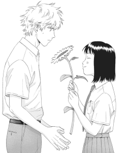
skip and loafer might be my favorite manga... i really don't think there are many other ones that can compare. it looks like your average slice of life romance manga at first: a girl moves from the countryside to the city for high school, meets a cute and kind guy, there's the mean girl who wants to stop them from getting together, along with other common tropes. but as i kept reading what i thought would just be a cute fluffy story, it kept on surprising me and proving my expectations wrong over and over again. everything about it feels so realistic in a very relatable, human way. this is something personal and not the only thing that makes it a good manga, but i love how it addresses so many little things that every girl and femme person might have felt anxious about at some point. romance, relationships, femininity, gender, jealousy, friendship... no matter how silly it might sound to worry about anything related to those things, the mangaka takes it seriously and gives some perspective on whatever it is. i feel like it healed my teenager self a little LOL. i really wish i had found about this manga when i was a teen. it feels like a warm hug i would've needed back then.
the manga does a really good job at making you understand the characters' actions, even those that might seem unreasonably mean or even morally wrong at first. it does not justify those actions, but rather it explains and shows different points of view, and how each person's background, trauma, and/or upbringing affects the way they behave. i ended up relating to the mean girl a lot more than i thought i would Lol...
there's a lot more i could say about it but i dont wanna keep this going forever... please read skip and loafer!!
wotakoi
I LOVED THIS a lot more than i think i would!! i finished this manga in 3 days :P the premise and title made me not check it out for a while even though people recommended it because well... "love is hard for otaku" sounded like it would be a compilation of unfunny jokes and bland stereotypical characters lol. but i decided to give it a try, and i ended up finding some of the most unique, realistic and sweet relationship and character developments i've seen in manga! as well as some really funny jokes sorry for misjudging you wotakoi...
i was really surprised to read that the author had never made anything romance related before because wow... the story develops in such a natural and slow paced way and yet it always remains interesting and funny. not one chapter feels like "filler" even if nothing is really happening. i really love it when mangakas know how to make common situations interesting, and how to use those situations to reveal small things in subtle ways as the story progresses. wotakoi might even be equal with skip and loafer in that aspect... they both do this so well and it's so important! i feel like so many mangas of all genres get stuck when they are done with telling certain plotlines or events because they don't know how to bring out the beautiful things of everyday life...
also i LOVE characters who have really strong passions/interests so i immediatly loved everyone in the cast. especially in shojo manga it's so common to see characters who have no hobbies or interest in anything in particular which pisses me off (ESPECIALLY the female characters... kimi ni todoke im looking at you) so the fact that everyone is a freak in wotakoi was really refreshing to see LOL. AWESOME and funny manga go read it NOW
kobato
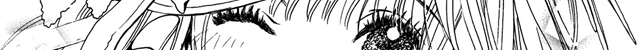
yugami kun ni wa tomodachi ga inai
this manga is Awesome... i actually almost dropped it like halfway because it turned out to be something i didnt expect at all LOL. that's not something that i dislike, but it's a kind of unexpected i never really encountered before.
you know when there is a character considered a "weirdo" in a slice of life high school manga, there is usually two ways the story will go: either the person wasn't actually a weirdo after all and was just misunderstood, or they are in fact a bit weird, but manage to change and start connecting with people. in both cases, progress usually happens thanks to another character that "sees the good in them" and helps them out. well i was pretty surprised to learn that there is a secret third option LOL
the weirdo in this story is genuinely a weirdo, nothing more Lol. he isn't evil or harmful at all, he is just a guy who has weird interests, is kind of annoying, extremely sincere, might seem creepy, and lives in his own world. and something very important is that he is insanely self confident. he does not need anyone to come and save him, because he's just perfectly fine as he is. i never encountered a character like this, and as i kept reading it made me think a bit about the expectations i initially had. like, why did i want this guy to change, anyway? this manga is not about the weird person trying hard to fit in and understand the "normal" world, but rather about trying to understand the weird, and realizing that maybe there is actually not a need to change the way they see the world. it's not easy to like this character, he is not designed for the reader to love them, but it made me realize that's not necessarily a bad thing. amazing manga, amazing ending.
the fragant flowers bloom with dignity
just caught up with this manga (october 2025) and it was nice, i liked seeing a romance story told
from a guy's pov. you never get to see their thoughts in most romance manga so i thought that was
cool...
i like the pacing, it's not rushing developments or relationships but also not dragging
anything for too long. main couple is cute and all but in the end the one that really has me obsessed
is the one happening with the side characters LOL if you're up to date u know which one i mean... I
LOVE THEM SO MUCHH need that confession scene NOW
it's really missing some conflict however lol. i don't mean toxic attitudes or cheap drama i mean that
EVERY character in this manga loves to be insanely kind to everyone around them all the time, never
disagree on anything with anyone, constantly apologize for the smallest inconveniences ever caused,
and such. it's just very unrealistic how nice and flawless everyone is, especially the female MC
lol... give me some morally grey person or something... this manga doesn't do anything revolutionary,
it won't surprise you or leave you thinking about it, but its alright for what it is, a cute and
fluffy romance manga.
the apothecary diaries
very interesting manga, never read anything like it before! it's set on imperial china and it's basically about a girl's life solving mysteries and working as an apothecary in the palace. it starts off as a sort of casual slice-of-life narrative and as it progresses the lore starts building up into something amazing. like for real the amount of lore is CRAZY (i had to start writing stuff down because i was getting lost lol) and the plot twists hit hard as hellll. if you want to read it do remember that it is set on a palace in imperial china so there is weird stuff going on with almost everyone's personal lives lol. maybe look up trigger warnings before reading/watching the anime.
lovely complex
jujutsu kaisen
apart from being obsessed with gojo for like a year, i like jujutsu kaisen as a whole... even though i cannot say i agree with some of gege's choices in some of the last chapters, this manga will always have a special place in my heart, being the first manga i read. i remember being surprised by how much you can transmit through this medium. i watched the anime first and i didn't really think that the manga would ever be as exciting as the animated version and i realized i was so wrong!! a lot of chapters had me at the edge of my seat just the same, if not more, than the anime. one thing i'll admit is that gege definitely knows how to keep battles interesting, exciting and consistent. wish i could say the same about character development Lol
.hack//G.U.+
kimi ni todoke / reaching you
gokinjo monogatari / a neighborhood story
here are all the videogames i've finished! i wrote story-spoiler-free
reviews for some of them. favorites are marked with a .
final fantasy xiii
hades II
fire emblem echoes
hollow knight
undertale
xenoblade X definitive edition
fire emblem awakening
xenosaga I, II & III
fire emblem shadow dragon
nier automata
.hack// g.u.
fire emblem blazing blade
zelda tears of the kingdom
xenoblade 3 future redeemed
persona 3 portable
fire emblem sacred stones
shin megami tensei III
xenoblade 3
fire emblem three houses
xenoblade 1 definitive edition
zelda skyward sword HD
zelda breath of the wild
digital devil saga
pokemon platinum
hades
the last story
xenoblade 1 wii version
zelda ocarina of time
zelda minish cap
zelda skyward sword wii version
zelda twilight princess
celeste
pokemon black
pokemon emerald
 final fantasy 13
final fantasy 13
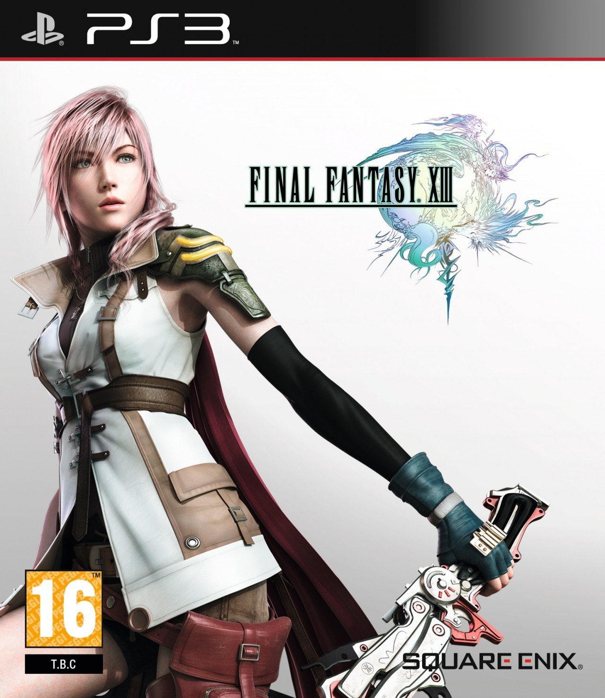
im going to be #real before this game i was a final fantasy hater its weird because its a franchise i should like in theory, considering that i love even the most tedious and outdated of jrpgs, but when i gave final fantasy 10 a try a few years ago thinking i'd probably like it, it ended up being the first jrpg i left unfinished ever LOL. i am sorry but i do not understand why that game is so popular In The Slightest. a bit later i decided to also give final fantasy 12 a try and while i did enjoy that one a lot more, i still wasn't hooked enough to finish it. i figured it just wasn't my cup of tea so i just gave up trying to like final fantasy games lol. but earlier this year someone recommended this game to me and i thought maybe third time's a charm... and it was! i wouldn't say this is one of my favorite games but i was at least able to understand why these games are so loved.
its weird because its a franchise i should like in theory, considering that i love even the most tedious and outdated of jrpgs, but when i gave final fantasy 10 a try a few years ago thinking i'd probably like it, it ended up being the first jrpg i left unfinished ever LOL. i am sorry but i do not understand why that game is so popular In The Slightest. a bit later i decided to also give final fantasy 12 a try and while i did enjoy that one a lot more, i still wasn't hooked enough to finish it. i figured it just wasn't my cup of tea so i just gave up trying to like final fantasy games lol. but earlier this year someone recommended this game to me and i thought maybe third time's a charm... and it was! i wouldn't say this is one of my favorite games but i was at least able to understand why these games are so loved.
i genuinely think this game is better than the other two i mentioned in every aspect, but the most noticeable difference is probably the cast. finally they dropped the typical bland heroic dude and decided to go for something much more interesting and special for a protagonist. lighting i love you... my queen... i just really like it when the jrpg protagonist is not a hero at all, but rather someone that learns to be one throughout the way. or at least tries to lol. all of the characters and the relationships between them felt way more genuine and less trope-y than in the other games i played, so i empathized with them a lot more. i mean it's all still a bit cliché and silly but i kinda think that is part of the core of this franchise, so at least here it was present in a level i could tolerate :P
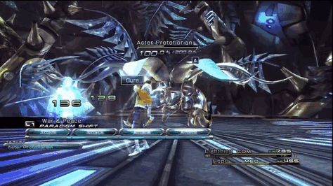
i really like the gameplay too! it took me a bit to get it because it goes against many jrpg combat basics, like when they introduced auto attack as the main way to play (i mean, selecting an action to take is basically 90% of the gameplay of an usual jrpg lol) but as more mechanics and characters showed up i got the hang of it and i ended up really liking it. i like that switching between different builds and playstyles is fairly easy and quick as it encourages you to try a ton of different ones and seeing what works and what doesn't, unlike most rpgs where it's just impossible to build a good team without struggling for hours and hours until something works, or following a guide step by step. well i did have to consult gamefaqs a few times but only because i was getting impatient LOL. its not very customizable in terms of abilities and skills, which i guess might make things kind of repetitive on replays but i'm not a replay kind of guy so i dont really care..
the story... uhhhhh... i also think it's better than ff12's (which was interesting but weirdly told and overcomplicated for no reason) and ff10's (which almost made me fall asleep sorry) but there's still something about it that doesn't fully work for me, especially later in the game. the thing that stands out the most might be the way that they reveal important information or plot twists, it is either confusing or super underwhelming most of the time. like a lot of times i had to double check what a character just said because they just dropped the biggest history changing plot twist of the game in the most casual or vague way possible lol. there is a "datalog" feature that summarizes and explains most of the lore which has been very useful, but it almost feels like the game relies on you reading it instead of just telling the story properly... the story itself also feels kinda aimless for most of the game. there were way too many dialogues that were like "so what do we do now?" "i don't know... but we must keep going..." after which the party proceeds to go somewhere and then nothing happens there so they go somewhere else and so on. there is supposed to be time pressure involved yet it doesn't feel that way at all. and it only gets worse towards the ending of the game where even though the storyline is ending it still seems like no one has a clue about What it is exactly that they have to do LOL it's weird... i feel like for the last 10 hours of the game there wasn't ONE substantial conversation between characters...
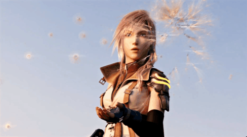
one thing final fantasy games are insanely good at is graphics and visuals, i gotta to give it to them... all the maps and locations are so GORGEOUS, detailed and full of life that i was almost mad that this is a linear game since it meant i wouldn't get to visit them again lol. final fantasy is just always ages ahead of any other jrpg in this aspect. ALSO THE UI i am totally in love with the UI omg... the glossy look is so pleasing to look at and it fits the game so so well. the rendered scenes look amazing, especially the fight scenes feel like watching a movie. the character models look really good too but it always freaks me out a little how extremely pale and blue eyed everyone is LOL. they're like that one miley cyrus image
in conclusion... it was pretty good and enjoyable. i love lightning. congrats final fantasy you have a decent game in your franchise!! sorry i'm being super mean LOL. i still think other jrpg franchises do what final fantasy does much better, but i can understand why people get attached to its world and characters. maybe one day i will give ff10 and ff12 another try...

hades II
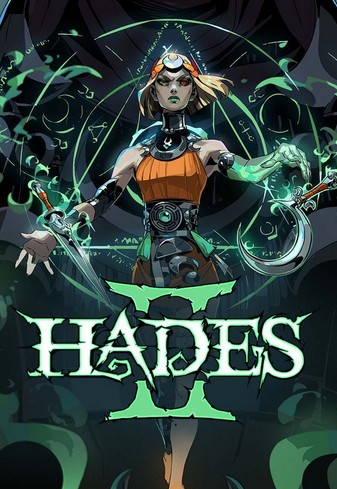
i played hades 1 for more than 100 hours (it kinda has a special place in my heart because that was the first time i wrote song lyrics inspired on a ship that i really liked LOL. i never released that song) so as soon as i heard that they were releasing a sequel i was both excited anddd confused? i didn't see how the story could be expanded + how the gameplay wouldn't be the same as the last one + the devs had said previously that they don't really do sequels for a reason... but now that i've played and got just as addicted as i did with the first one i can say they did a really good job at making a hades sequel!!
i think the two games do feel like the same game a little (and i think that is the intention) so i don't know if i would recommend to play one right after the other, but with a little break in the middle i think playing the sequel is totally worth it. it made me remember why i liked hades 1 so much without ever feeling like it was a replay or an extension of what i already played. it's also a bigger game than the first one in many ways than one which really makes it feel like a thing of its own.
this applies to both games but i do like how it doesn't punish you for losing. not saying that it's a bad thing when games do that, but as someone who gets nervous easily with action games it's just nice to be able to play a game that is forgiving while still challenging at the same time. like, the game feels high stakes enough for me to be happy when i manage to kill a boss or something, but not so much that im shaking by the end of it LOL. i'm a jrpg player dude i'm used to having all the time in the world in turn based combat to decide what to do Lol. the fact that there's characters to talk to, story to progress and items to unlock when the run ends almost makes you look forward to losing. also as a jrpg player again i do love that you can lowkey be ass at the game but make a really good build and kill everything in two seconds and pretend you're good at it.
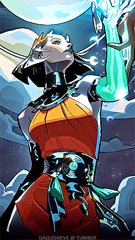
the story was nice! i know Nothing about greek mythology so i always feel like i'm missing half of the things the characters are talking about but i can understand what's going on in a general level... it's interesting how they went for a completely different approach with this game, but it's a bit weird. the main plot is supposed to be a much bigger deal than the first one in terms of how it affects the world and the people living in it, but at the same time it feels like the motivations of the characters aren't really That clear. feels like a lot of times while fighting most of the bosses the conversations were sorta like "hey so why are we even fighting again" "i don't know but i WILL kill you" and it's like okay i guess LOL. i think it didn't feel "convincing" enough for me to feel too invested. the characters also didn't feel like they changed or evolved much throughout the story, except for some cases at the very end. i still liked the story though! i like where they chose to take it considering it's a sequel. it works well with the previous game, it doesn't feel like it's only stretching its story, and it doesn't rely only on references to it to keep your attention either.
as for the characters themselves obviously they look awesome... i reallyy loved the new character designs!! i think apollo and artemis are my favorites. for some reason i didn't get obsessed with anyone in this game as i did with the 1st (thanatos was one of my first videogame crushes LOL) but it was still fun to talk to the characters and find out more about them. it was fun having more romance options too... there's one that i like that i havent been able to get together w melinoe yet LOL i shall keep playing because of that... uhh and also to save the world or whatever
fire emblem echoes
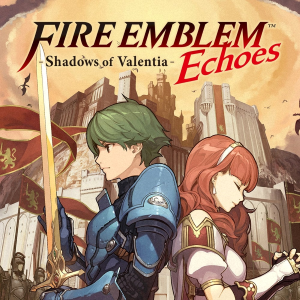
it's funny how in my fire emblem awakening review i was talking about how FE games never do anything too surprising but i still enjoy them anyway knowing i'll get exactly what i expect. and then fire emblem echoes shows up and says girl fuck you you're WRONG!
i mean just wow. i know this is a remake of an older game so a lot of the things that are unique from it probably come from the original, but i'm still surprised they stood by those things instead of playing it safe and adapting the story into your average modern FE game, with the usual gameplay, supports, general mechanics... it freaked me out a little at the beggining how different it was LOL. the archers that can shoot from 1 kilometer away, the weapon triangle not seeming to exist, then a little later i was exploring a 3D DUNGEON ?? every obligatory fire emblem rule suddenly vanished, and i honestly thought that was awesome! also, i'm happy to announce that i have beaten a fire emblem in hard difficuly for the first time LOL. yeah i shouldve done this in my 3rd fire emblem and not my 6th but Whateverrrrrrr
i'm sure the opinions on this game must be super divisive because it's really different from the typical fire emblem formula, and it might not be everyone's taste so this might piss off a few redditors, but i genuinely think this is the best fire emblem game... there's so many things that add a lot to the average FE experience for me. the dungeons, for example, are so fun to explore and they make the world feel a lot more real, it's such a big difference from moving to point A to point B in a 2d pixelated map lol. they never felt too long or too annoying, i think it makes the game a little more dynamic while still keeping its core, the gameplay. and the gameplay, the way it works takes a bit to get used to and it's not perfect, especially with how many fuckinngggg enemy spawners they love to put in this game, but i really liked how it forced me to rethink the usual strategies i approached maps and enemies with. it has some absolute bullshit mechanics in it but it's a nice change from the usual predictability lol! adding to this the really loveable cast of characters, the awesome voice acting (berkut's EN voice actor really gave it his all damn) the beautiful soundtrack, the complementing "routes" and a lot other things i'm probably forgetting about, it's just perfect.
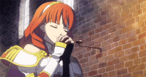
the soundtrack is so damn good. this might be weird coming from a music AND videogame lover but i usually dont gaf about soundtracks lol... except for some very specific cases where it really stands out, and this is definitely one of those cases. when i first heard this song specifically i stopped for a bit just to listen to it which is very rare of me LOL. such a beauuutiful track. the music doesn't just blend into the background, it made the world feel a bit fuller and it set the mood for each chapter and battle really well. it reminded me of xenoblade 1 soundtrack (my beloved) a little bit :P i was actually kind of surprised when i noticed all the similarities with xenoblade 1 in terms of story. i won't say what they are in order to not spoil neither of them but they're almost Suspicious...
the story is the only thing that didn't surprise me as much, it was your average FE story with ancient dragons and some chosen one and those really silly "plot twists" that you couldve probably predicted even if you skipped all the dialogues. not bad but not shockingly good either. one thing that i thought was interesting however, is the way the game approaches the topic of nobility, the military, and the "worth" assigned to each person based on those things. it's not like anyone started a revolution but it does question why is it more important to save the life of a noble person than someone else's, and some characters even question the reason behind the sudden meritocracy in the army impulsed by the nobles in times where they need more manpower, as well as the differences in opportunities for people who weren't born rich, or noble. i have never ever seen these sorts of things discussed in other FE games i've played, where even if the weight it had for every character was different, everyone was loyal and willing to give up their lives for their king, no questions asked. i was really surprised to read some of these dialogues lol.
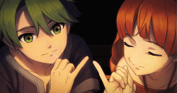
as i said earlier i really liked the cast, including both alm and celica and their relationship, though i have my issues with some of the writing... it was a bit dissappointing how the game initially presents them both as the main characters with equally important roles to play in the story, yet as the game progresses it ends up centering around the male main character more and more, leaving celica in a more secondary, supporting role. and even though they both fight in almost the same amount of battles and do equally important things to save their world, the only one who really gets the title of "the hero" is alm... in general, i would've liked to see more female characters with more interesting personalities, motivations and goals in this game as well as a little more protagonism, but i have to remind myself that even if it looks brand new, this is a remake from a game from 1992 lol. it's not terrible but if there is one aspect that echoes isn't the best FE in, it's this. also that ending was kinda eh. i cannot believe they didnt make any cutscenes for THAT EVENT
having said all this stuff about echoes being the best fire emblem and whatever, is it my favorite ? abolsutely NOT because my husband chrom isn't in it. awakening FOREVERRRRRR I LOVE MY STUPID KING AND OUR CHILDREN
hollow knight
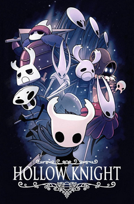
me playing and reviewing something that isnt a jrpg?????? its rare but its true...
my bf who is the number one fan of this game has been insisting that i play it for Ages and ages but i'm always more inclined to play story focused games so i never did it... until a few weeks ago! and it's been great! i want to write down my thoughts but i don't have a lot of other stuff to compare it to since i don't play games like this very often LOL so uhh take my opinions with a grain of salt
i often forget how fun it is to play more gameplay-focused games like this. the boss battles are so damn FUNNNN. except for some specific cases, each boss battle felt unique and totally different from the rest. it never felt frustrating at all even if i lost a bunch of times, since learning the attacks and thinking about different strategies to go about the fight helped me make significant progress with each attempt. it doesn't feel "unfair" at all when i lose and it always encourages me to keep trying which is great. some of the normal enemies i didn't enjoy so much though... i am not expecting an interesting challenge in every corner of the map obviously but a lot of the enemies you encounter when walking around are just annoying, and when they come in swarms it's just a pain in the ass lol. i wouldn't mind this if the game didn't have you doing a lot of walking, but It Definitely Does, so if i didn't have to kill 100 monsters for the 19th time or lose trying to ignore them in order to get to my destination i would be grateful... it's okay though. a lot of other games i've played are much worse in this aspect lol
one thing that i loved and that surprised me from this game is the exploration. story isn't the only reason i always play JRPGs, there is also something about the worlds that they happen in and the atmosphere that makes me feel really immersed. that isn't something that really happened to me with other games outside of the genre until i played hollow knight. the little secret rooms, the world that keeps on expanding further and further. they managed to transmit the feeling of openness of huge spaces like a big lake or a mountain, as well as the claustrophobic feeling of smaller spaces, in only two dimensions. it feels very 3D for a 2D game lol
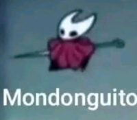
story... well i don't really know wtf is going on but i'm sure that if i made an effort to understand it would be really interesting LOL. i'm always the sort of person who cares a lot about story and takes note of names and places and whatever other lore details i encounter, but with games like these i prefer to put down my phone and notes app and just enjoy the gameplay. either way, a lot of the story is told indirectly by the world itself, so even if you're not paying much attention to the story you can still feel immersed in it, which is pretty cool.
this might be a little controversial but i didn't really love how about 30% of the game is "hidden" and unless you paid close attention to the story you don't really have a way of knowing how to unlock a big portion of the game other than googling it. i wouldn't mind them hiding some charms or one secret boss this way, as it would feel more like extra content for completionists, but 30% of the game?? it's a lot... i just think there could've been other indirect ways to guide the player to the hidden areas. for example, when i beat the final boss i thought for sure that a lot of blocked paths that i ran into during the game would open, which would've been great since i would've been able to figure out how to progress without any hints, but it wasn't the case lol. i just had to ask someone how to unlock the resto of the game...
that little detail aside, it's an amazing game and i can totally understand why it's gotten as much praise as it did. maybe i'll even give silksong a try one day? we'll see... now if you'll excuse me im gonna play yet another fire emblem because i havent played a jrpg for too long and im having withdrawals
fire emblem awakening
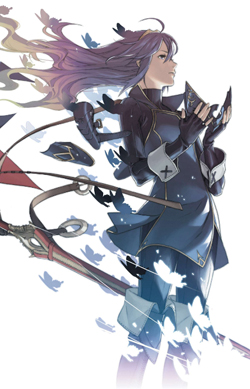
i love fire emblem games!! i always know before playing that these arent games that will blow my mind or do anything too unexpected, but when i pick one of these up i just know i'm gonna have fun and be addicted for a while..
it's pretty obvious now that i've played a bunch of them how the games' focus has shifted throughout the years to be centered more on characters and supports, but personally i enjoy (mostly) the whole range of the series. i really love the gameplay so i don't mind playing games like shadow dragon, where the secondary characters literally have 1 dialogue line in total, and spending hours just killing dragons and such. but if the game also lets me marry the cool guy with a sword on top of that then that's fine by me too u know...
awakening is, in my opinion, a pretty good balance between the "early" and "new" fire emblem and the support mechanics. i mean yes the units can get married and have kids BUT i think the supports are integrated into gameplay in a really fun way, and the social sim side of it doesn't feel as forced or shoved in your face as in newer games. for everyone who enjoys that side of fire emblem, i think it's the most fun and cute support system, but it's also pretty much avoidable if you only care about stats and gameplay, since it only requires placing your units together in combat. you can basically make invincible units with it too so i think there's something in it for everyone...
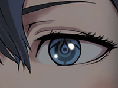
while playing i was reminded of my three houses playthrough a bit, except awakening is kinda what i would've liked three houses to be in many ways... one thing i loved is how robin (the avatar character) has an actual personality lol the supports just make a lot more sense when there are actual conversations happening instead of only one side talking and the avatar replying with "..." i also just never felt like this much effort and care was ever put into any other FE game. i think they did a really good job at making each player's playthrough feel unique and personalized. there is a lot of reused dialogue of course, but i think it's insane that there are around 25 first gen characters with a bunch of S support options each, and each pairing you choose will have a kid, who has support conversations with their parents... the amount of possibilities is crazy... AND it gets even crazier when some (well maybe only a few) of the choices you make pairing wise can affect certain events in the story... i won't spoil i'll just say that the robin/chrom pairing is superior and canon in my books
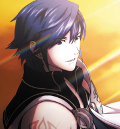
so this section is when the review turns into me yapping about chrom and robin for a bit because I LOVE THEM!!
i think chrom is my favorite main character in the series lol i know he's a bit silly sometimes but i like how that kinda sets him apart from other FE lords... he's not a perfect leader who could never make a mistake, or a legendary hero with unshakable conviction and courage, he's just a guy that suddenly had a big responsibility fall onto him one day and he's trying his best to save the people he cares about (i like lyndis from blazing blade a lot for the same reason :P) he's just a kind of awkward dude who gets nervous when he's near his tactician that he is in love with and i think that's cool...
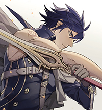
as for his pairing with robin i legit think it makes the story better!! chrom is the prince and the leader of the army and robin is the army's tactician, so ofc robin plays an important role in the main story and they're always travelling, working and going through all kinds of stuff together. it could be a great platonic relationship as well, but i personally love how much of a power couple they are LOL. during all of the war they're always there for one another, they trust and count on each other, and they make an amazing team together. so cute!!! them being a couple also makes it a lot more interesting lore and character development wise... i love to think about the bizarre outcomes it has for the awakening universe :P yes their supports are the worst kind of cliche anime humor but they go through enough awful stuff during the story to make up for it so i don't mind... AND THEIR KIDS!!! i love their kids so much i need them all to always be a happy family i'd write a whole other paragraph but this would go on forever okay back to the review
one thing i didnt like... this game is way too easy... it might be because i chose normal difficulty (i never know wtf to choose because difficulty depends a lot on the game... learned that when i started a new mystery of the emblem run on normal and i got absolutely demolished in chapter 1) but either way, it was way too easy to get insanely overpowered units, or even, it's hard to not do that... even when i chose lower level units so i could somehow make it harder it would take just a few chapters to have them oneshotting everything so it got kinda boring towards the end. and it sucks because there's a lot of cool mechanics like skills that i never paid much attention to since it was too easy for that to matter much anyway... definitely play this on hard if you have any FE experience lol
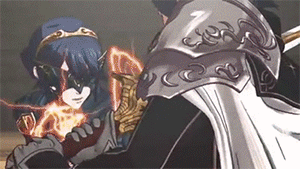
overall... i liked this game a lot! other than my issues with the gameplay towards the end i had a lot of fun. the cast had a lot of people in it that i did not gaf about but the characters i did like make up for it because i like them a lot :P good maps, good OST and good story (maybe it's because i wasn't expecting much but i liked it a lot actually). i think this is my favorite fire emblem! we'll see if that changes in the future when i play more of these silly games...
xenosaga
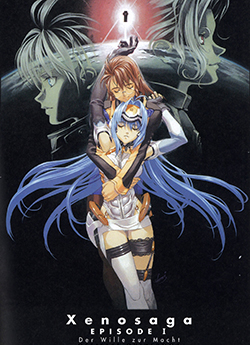
i had been wanting to play xenosaga for a long time ever since i found out it existed. i was a bit scared of the length because i've played long jrpgs before but three 50-hour-long games sounded like a whole commitment (and it was lol). still, around april this year i was really missing the feeling that playing xenoblade games gives me. i love xenoblade SO much, i think the characters, the plot, and the worlds monolith soft creates are wonderful and immersive and unique... so i played xenosaga (the saga that came before xenoblade) and it was as amazing as i expected, if not more. but i think that nothing, not even playing the xenoblade games, prepared me for the experience xenosaga is...
i had heard and read before playing that xenosaga was a very ambitious game given its budget and resources, and that the lore was quite complex and extensive, but oh my GOD there are truly not enough words to describe how insanely detailed and intricate the lore and worldbuilding in these games is.
tonnns and tons of interconnecting subplots, characters with insane backstories, a whole galaxy of planets with its political and economical system that runs it, and a timeline that goes all the way from the birth of JESUS to the year 4768... im not kidding LOL whenever i played i had my notepad app open to take notes of what was going on and with one of them (i have one for each episode) I REACHED THE CHARACTER LIMIT!! I DIDNT KNOW THAT COULD HAPPEN!
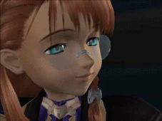
something that felt really refreshing in xenosaga (even though it is a 20 year old game) was the fact that it has no problem being very in-your-face in many aspects. theres a lot of social and political criticism, graphic violence and flawed characters. i'm not saying you can't find things like these in other JRPGs (the xenoblade games do have that in more moderate ways) but i don't think i've ever played one that gave less of a shit about anything other than telling the story it wants to tell and conveying its message like xenosaga does, and i absolutely love that...
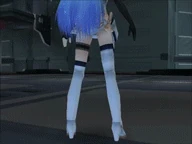
xenosaga episode 1 was released in 2002 and i think it is a very "Y2K" game in many ways other than visually (every time someone uses kosmos as their y2k nostalgia icon without having played the games a fairy dies... its true...) i'm not really an expert on the topic but i think that this kind of ultra futuristic setting and pessimistic view on capitalism, individualism and technology was something that could have only been released around this time. i think we all get the idea that people were insanely supportive and optimistic about technology in the 2000s, but such drastic changes in everyday life also had people wondering how would they affect the future in a negative way. i think xenosaga is a beautiful piece of media that represents every (very valid) reason why people were scared of the future of technology. it's dark, complicated, graphic, and in many ways it's nothing alike its successor, xenoblade chronicles. it just makes a lot of sense that the third and last game before the saga was cancelled was released in 2006, when a lot of videogame studios, especially nintendo, starting aiming towards more lighthearted and nature-like aesthetics. so the way it presents itself makes it feel nostalgic even when i'm playing it for the first time 23 years later, but at the same time, its themes, topics and discussions are so relevant to the state of the world today that i forget it's an old game sometimes. it's such an insane experience lol
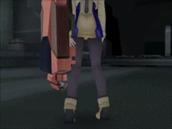
i think one of the things that make me think that xenosaga was miles ahead of any other videogame plotline at the time is the fact that there are cyborgs in the xenosaga world (and i wouldn't know for sure, but i feel like they were one of the most common ways to represent "the future" in media in the 2000s) and in this story they are absolutely outdated and thought of as antique, since AI and genetic manipulation has advanced to the point where it's possible to basically create human beings, with artifical personalities and intelligence, from scratch. and they don't just leave it at that, but they discuss the social consequences of it as well. there's constant conflict in the society and the government regarding whether the new "people" should have rights or not, or if they can be considered people at all, not to mention the role that businesses in charge of making the new "people" play in all of this. even in videogames that approach these sorts of topics, i've never seen one try to truly show you how these circumstances directly affect the characters in the story as much as xenosaga does. i think it's very easy for shows and other media to approach these catastrophic and dystopic events in a disingenuous way that feels cheap and disconnected from the actual issue, which is why i really appreciate xenosaga for doing all the opposite. it shows how, no matter how big of a disaster, everyone involved is just a person, with its own story, relationships and reasons that led them to where they are. without justifying it of course lol
i havent talked about any other aspects other than story LOL but in general, even though the gameplay dragged on a bit sometimes (listen episode 2 had a Lot of potential but man those battles took way too long for my liking lol) i really loved this game. it was a wonderful experience and i'm very glad i decided to play through all three episodes even while being in college and barely having time to play :P
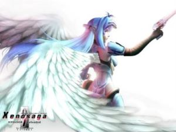
something i really wanted to add, without spoiling, is that i don't usually get emotional with any media, even if i really enjoyed it, idk why... but the ending of this game absolutely broke me lol i couldnt believe it but it made me cry... i was just telling my bf a few days before finishing ep 3 that i never expect too much from endings because they never end up living up to what you expect from them, and xenosaga made me swallow my words COMPLETELY oh my god i really don't think i'll see an ending more beautiful than xenosaga's... this game has earned a place in my heart forever... i love you xenosaga!!
 xenoblade x
xenoblade x
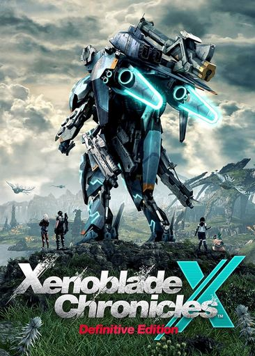
i am very conflicted about this game LOL. xenoblade 1 is my favorite game of all time and i am in general very fond of the xeno games as a whole (except for xenogears which i havent played yet, and xenoblade 2 which sucks sorry) so even though i knew that X was quite different from the main saga, i knew i was probably going to find some of the things i loved from it in this game. and in many ways i was right, it definitely feels like a xenoblade game in terms of, for example, the beautifully crafted, immense open world it happens in. at the same time, i might have underestimated how much i'd miss the things that are present in 1 and 3 and not here lol. and there were also things i disliked regardless of the expectations i had, so let me begin...
i'll start with something i liked: women!!! cool women in the jrpg!!! the two initial party members and protagonists of the main story are women (add one more girl if you chose your avatar character to be one) and almost everyone in this world relies on them to save it. i really dont think female characters in jrpgs are as bad as i've heard people say, they often just dont bother paying any attention to their arcs, but i think i never encountered a game where the girls are leading the way as in this one, and i think that's really cool!! they are never put into any ridiculing situations or involved in any romantic drama, and they aren't depicted as glorious angels descended from heaven either. they are engineers, fighters, commanders, pilots who just try to live their lives as best as they can as they try to help out people in need...
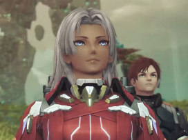
in a similar topic, it was also interesting to have most people in the game be very normal looking and 25+ years old... as for the looks, i mean, having silly character designs is something i appreciate from jrpgs even if they sometimes end up looking ridiculous. but it does feel more realistic and in tone with the world and story when the characters actually look like they belong there. the age thing is awesome. i think i can count jrpg main party members that are over 30 and don't look 15 in one hand... this game isnt really scared of the characters not being appealing or particularly hot and young and whatever. (u could argue against that because of some of the armor designs, especially for women... but well generally speaking Lol) they stayed away from most tropes you'd expect from a japanese role playing game. pretty risky considering the game's fanbase idk why they did that but i think it's kinda cool. they DID release xenoblade 2 after this though LOL
i also want to talk a bit about the parts i didn't like about the cast so... basically, the way that most party members are introduced isnt through the main story, but rather you get to pick your party members from a bunch of side characters that you unlock by doing their respective missions. i didnt enjoy most of those missions. i don't know if it's because the characters themselves aren't super interesting, or because they aren't involved with the main story at all, or because the missions are very short and barely give you any time to care about what happens to them, but most of these really just felt like a chore... they don't feel like an expansion of the main story at all, it just feels like random people telling you their life stories for no reason. it's been really hard for me to be invested in a character's story enough to do the other 2 or 3 missions about them. most of them don't ever connect with other side characters either, so that's even less of a motivation.
about missions. there are TOO MANY missions in this game. and they are all LONG and with a lot of TEXT. i really don't understand why people seem to think that more text = better missions when it comes to basic fetch missions and such. dude just tell me what you want and i'll get it so i can gain some exp. not EVERY mission has to have the character explaining their lives and motivations to me, especially with the huge amount of missions there is in this game. from chapter 4 onwards my map has been completely filled with green quest marks and i feel like i get one done and four more show up. yes i know im the one accepting them... but i still dont feel like there is a need for this many quests to exist lol
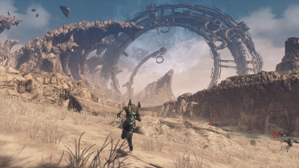
another thing i did like was exploration. considering i didnt know you could jump until like 20 hours into the game i think that is no small feat LOL. it has a system similar to breath of the wild where you basically unlock landmarks by reaching them and activating them, which is really fun for me for some reason. im someone that usually gets stressed with big maps because i feel like i have to check every corner and make sure i'm not missing anything, but somehow that doesnt happen to me at all with this game. i think it's because you can go almost Anywhere you want in this enormous world right from the start, in any direction (and the game actually incentivizes you to go and do so) and so it makes my brain understand that there is no "right" way to explore it. it gets even better later in the game with a certain addition, but i never felt like i was missing anything in the beggining.
the combat... it's alright? maybe i just suck at combat in this game but the main difference i noticed with 1 and 3 is that the outcome of battle is defined before the battle rather than during it, by checking every member's arts and skills and setting them up to sorta work together. sure, that is kinda true for the other games as well, and every rpg ever, but i still feel like there was much more of a difference you could make by doing certain things during combat. in X, not only i feel like there isn't that much to do, but what i can do doesn't seem to matter a lot. the tutorials SUCK, so maybe there are things i don't know. but everything related to combat and stats also seems to be needlessly complicated, described in vague terms, and hidden behind endless menu screens. that includes other mechanics, like this currency the game has called "miranium" which every character insists is the most valuable thing in the world yet i have a gazillion of it in my inventory because i dont see the need to spend it at all. with how much of a pain it is to set up a team that works, it really does not make me want to change it, and so it ends up being repetitive. i don't hate it, i think i managed to sort of understand the basics and build a team that works, but they could've done better imo.
and finally... story... this was obviously the aspect i was looking forward the most to. i knew this wasnt supposed to be a story driven game, that it focuses on side missions, exploration, etc etc, but that doesn't mean the main story is gonna be BAD right... well... the story in itself isnt, but the pacing is very weird and it doesn't make a lot of sense. there are not many story chapters and you only get to do one of them after you've leveled up a bunch, yet some of them last like 15 minutes, you go to fight someone, basically nothing happens and the quest ends. sometimes a few of those happen in a row. why is that even a main story mission. i'm not asking for insane lore drops each chapter, but you can still add a bit to the worldbuilding, expand on the characters' lore, have them interact outside missions... i really feel like half the dialogues were the characters describing where they would go and what they would do, then getting there and describing what they were doing, then reporting back home. all the game i was dying to know more about lin and more importantly elma, who is the main character if you don't count the avatar and until chapter 12 you know literally nothing about her... and i'm not talking about lore! i'm talking about never bothering to dig deeper into the personalities and minds of the characters past their initial impressions (like elma = commander, lin = smart kid, tatsu = comic relief and such lol). there isn't really any character development in this game... i knew it was a short story but i didnt know i would be begging for a crumb of story here damn...
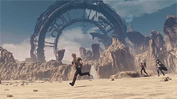
so... this review turned out to be more negative than positive after all, but i did like the game. most
of the complaints i have really only started bothering me later on, i really enjoyed my first 30 hours
or so. i havent finished this game yet btw LOL but i am 70 hours in, and i think there's gonna be
some huge lore reveals really soon that probably will have me screaming scrying throwing up and saying
this is the best game i have ever played in my life. so i thought the review would be a little less
biased if i wrote it now. ending this with my personal and only correct xenoblade games ranking:
xenoblade 1 > xenoblade 3 > xenoblade X > xenoblade 2
these are special pages dedicated to specific things i really love! im Very Normal about them... keep in mind these pages are very image and gif heavy!
page dedicated to phoenix MY BELOVED my favorite band !! this shrine is fucking huge you have been warned
page dedicated to pizzicato five, another band that i really love! well more like One very specific era of it but still